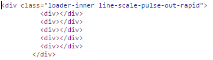
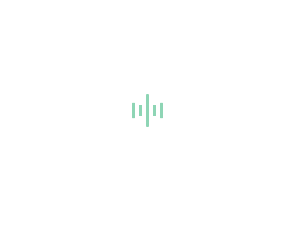

为了提高博客用户体验，我们可以为其添加一些动画效果。这篇博文主要介绍如何添加页面切换动画以及页面加载动画。需要用到的插件：
Animsition.js：http://git.blivesta.com/animsition/
Loader.css：https://connoratherton.com/loaders
页面切换动画
首先从https://github.com/blivesta/animsition上下载插件包，解压后在博客主题中引入animsition.css和animsition.js：
1 | <script src="{{$.themeBaseUrl}}/animsition.js"></script> |
这里不引入压缩版的原因是为了方便待会修改源码。 然后找到博客主题中的body标签，添加 class="animsition"：
1 | <body class="animsition"> |
接着找到博客主题中所有的a标签，添加class="animsition-link"。 最后调用Animsition动画：
1 | $(document).ready(function() { |
inClass和outClass指定了页面载入和离开时候所展示的动画，这里使用淡入淡出的效果。Animsition提供了许多动画效果，可根据自己的喜好更换。inDuration和outDuration指定了动画的持续时间，单位为毫秒。linkElement指定超链接元素，这里是我们上面添加了class="animsition-link"的a标签。
页面加载动画
Loader.css是一个纯CSS加载动画插件。Animsition插件自带的加载动画不太美观，所以使用该插件替换。 首先从https://github.com/ConnorAtherton/loaders.css上下载插件包，解压后打开loaders.css-master/demo/demo.html可看到许多美观的加载动画。选择一个自己喜欢的动画，然后F12查看其HTML源代码，比如：

从源码中可知道，这个动画对应的class名称为line-scale-pulse-out-rapid
然后修改一开始引入的animsition.js，找到并修改addLoading函数：
1 | addLoading: function(n) { |
这里loadingClass属性名称是在 $(".animsition").animsition({})函数中指定的，细心的你可能会发现，我已经在上面的例子中将loadingClass属性值指定为line-scale-pulse-out-rapid了。
接下来修改animsition.css，找到和.animsition-loading有关的代码：
1 | /* loading option */ |
这段代码是Animsition插件自带的加载动画，将其删除。然后从loaders.css-master/loader.css中找到和.line-scale-pulse-out-rapid有关的CSS代码：
1 | @-webkit-keyframes line-scale-pulse-out-rapid { |
将这段代码添加到animsition.css中。这里.line-scale-pulse-out-rapid > div 的背景色是白色的（background-color: #fff），所以我们要将其修改为自己需要的颜色，比如博主将其替换为浅绿色：
1 | .line-scale-pulse-out-rapid > div { |
最后一步，我们需要修改加载动画模块div的定位方式为固定定位并且居中：
1 | .line-scale-pulse-out-rapid { |
将上面的步骤依次做完后，在加载包含较多图片的博客或者网络不佳的情况下，我们可以看到如下的加载动画：

Animsition插件还有添加覆盖物overlay功能，博主没有使用这个功能，所以不再介绍，具体可查阅官方API。